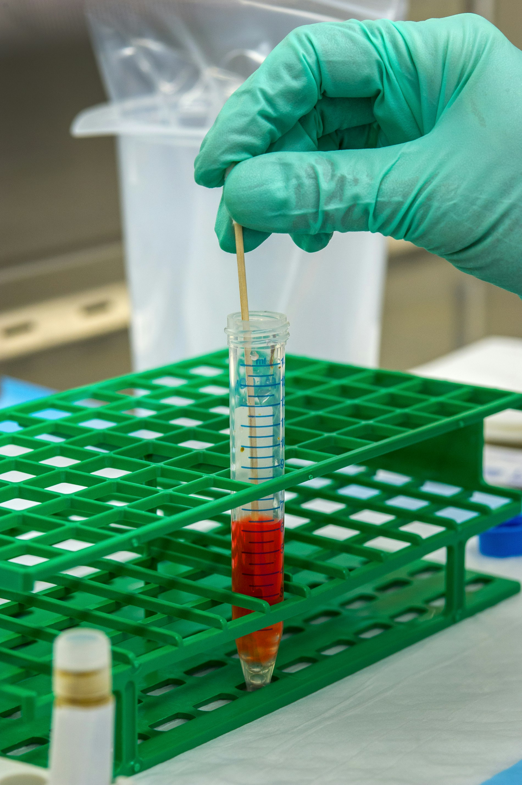

Featured · GuidesHow to prepare for a blood test
Practical advice and ideas from the Precisa Labs team on how to prepare for a blood test.
Read article →
Heart HealthUnderstanding your cholesterol numbers
Practical advice and ideas from the Precisa Labs team on understanding your cholesterol numbers.
WellnessSigns you might be low on vitamin D
Practical advice and ideas from the Precisa Labs team on signs you might be low on vitamin D.
DiabetesWhat your HbA1c result really means
Practical advice and ideas from the Precisa Labs team on what your HbA1c result really means.
Preventive CareWhich health checks you need at every age
Practical advice and ideas from the Precisa Labs team on which health checks you need at every age.

Inside the LabHow we keep every result accurate
Practical advice and ideas from the Precisa Labs team on how we keep every result accurate.
No articles found
Newsletter
Stay in the loop
Insights, news and ideas from our team — once a month, never spam.